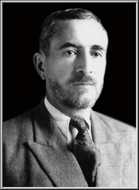

قازی محمد

قازی محەممەد (١ی ئایاری ١٨٩٣[١] – ٣١ی ئازاری ١٩٤٧) سیاسەتوان
دادوەرێکی کورد و سەرۆکی کۆماری کوردستان بوو. ئەو یەکێک لە کەسایەتییە بەناوبانگەکانی ناوچەی موکریان بوو کە لە ساڵی ١٩٤٦ بە ھاوکاری چەند کەسێکی دیکە وڵاتێکی سەربەخۆیان لە شاری مەھاباد دامەزراند. دوای ڕووخانی کۆمار لە ساڵی ١٩٤٧دا قازی لەگەڵ ھاوڕێکانی لەلایەن حکوومەتی پەھلەوی لە مەیدانی چوارچرای شاری مەھاباد لە سێدارە درا.
سەرەتای ژیان
وێنەی قازی محەممەد بە گەنجی و بە جلوبەرگی کوردییەوە.
قازی محەممەد، کوڕی قازی عەلی، لە بنەماڵەیەک لەدایکبووە کە ناوبانگی لە شاری مەھاباد بۆ چوار سەدە پێشتر دەگەڕێتەوە. ئەوان نەک تەنیا لەلای خەڵک بەڵکوو لەلایەن دەسەڵاتداران و بەرپرسانی
حکوومەتیش، جێگەی ڕێز و پێزانین بوون. ھەر بە بنەماڵە زانا و ئازادیخواز و نیشتمانپەروەر بوون. لە جەنگی یەکەمی جیھانیدا پیاوی وەک میرزا فەتاحی قازییان لە بەرەنگاریی ڕاستەوخۆ لەگەڵ ڕووسەکان لێ شەھید بوو، کوڕە لاوەکانیشی (سالار و محەممەد) بە دیل گیران و بۆ شوێنە دوورەکانی ڕووسیای ئەو کات بەڕێ کران و تا شۆڕشی تشرینی یەکەم ھەر لە دیلیدا بوون.
قازی عەلی باوکی، لە ١٩٣٠ لە مەھاباد ڕێکخراوێکی کوردی بە ناوی بزووتنەوەی محەممەد پێک ھێنا. ناوبراو لەگەڵ جووڵانەوەی شێخ محەممەد خیابانی لە تەورێز پێوەندی ھەبوو، تا ساڵی ١٩٣٤یش کە مرد لەسەر ئەو کارە بەردەوام بووە.
قازی عەلی، دوو کوڕی ھەبووە، یەکیان ئەبوالقاسم قازی (ناسراو بە سەدری قازی) بووە کە دوو دەورە لەلایەن خەڵکەوە کراوەتە نوێنەری پەڕلەمان و جێبڕوا و کاریگەرێتی تایبەتی ھەبووە. دوای تەواوبوونی کاری پەڕلەمان لەسەر ڕاسپاردەی باوکی، بۆ ڕاپەڕاندنی کارە سیاسییەکان و یاریدانی خەڵک ھەر لە تاران مابۆوە.
قازی محەممەدیش کە ساڵی ١٨٩٣ی زایینی لەو بنەماڵە
دا لەدایک بووە. قازی محەممەد لە منداڵی و لاوی دا زۆر خولیای زانست و فێربوونی زمانە بیانییەکان بووە و جگە لە کوردی ، عەرەبی و فارسی، لەگەڵ زمانی فەرەنسی و ئینگلیزی و ئێسپێرانتۆ و تا ڕادەیەکیش ڕووسی ئاشنایەتی کردووە. قازی محەممەد زۆری حەز بە تێکەڵاوی لەگەڵ کەسایەتییە گەورەکان، کوردانی نیشتمانپەروەر و سەرۆک عەشیرەتەکان ھەبووە.
دەستپێکی فەرھەنگی
دوای مردنی باوکی، بوو بە دادوەر (قازی)ی شار. لە بەر ئارەزووی خۆی بۆ کاری فەرھەنگی و
بردنەسەرەوەی زانیاری خەڵک، لە ساڵەکانی بەر لە ١٩٤١ و دوای ئەوەش بەرپرسایەتی دایەرەی فەرھەنگ و ئەوقافی شاری مەھابادی بە ئەستۆوە گرتووە و خزمەتی بەرچاوی فەرھەنگی کردوە و لە کاتی بەرپرسایەتیی ئەودا، یەکەم قوتابخانەی کچان لە مەھاباد کراوەتەوە. ھەر لەبەر ئەوە لەگەڵ زۆرێ لە خوێندکاران، ڕۆشنبیران و مامۆستایان پەیوەندی نزیکی بووە.
لە چەند ساڵ ماوەی نابەسامانی دەوڵەتی ناوەندیی تاران، واتە لە ساڵانی١٩٤١ تا١٩٤٦ کە کۆماری کوردستان پێک ھاتووە ، بەڕێوبەرایەتی ئەو لە پێشبردنی کاروبارەکاندا و بە تایبەتی لە چارەسەریی کێشە عەشیرەیییەکاندا دەورێکی بەرچاو بووە. زۆر لە گرفتەکانی کاری ڕۆژانەی خەڵک لە دیوانی ئەودا کە مەحکەمەیان دادگاـیان پێدەوت، چارەسەر بووە.
قازی محەممەد ڕێزی تایبەتی بۆ دامەزرێنەرانی کۆمەڵەی ژیانەوەی کوردستان (ژ. ک) ھەبووە. زۆر لە دامەزرێنەرانی ژ.ک ڕاوێژیان لەگەڵ کردووە و زۆریان خۆش ویستوە و گەلێکیان ھەوڵ لەگەڵ داوە تا ببێتە ئەندامی ئەو کۆمەڵەیە.
قازی لە ڕوانگەی نوێنەرانی بیانیشەوە کە ئەوکات ئێرانیان لەنێو خۆیان دا دابەش کردبوو، ڕێزی تایبەتی ھەبووە. ھەر کەس چووەتە مەھاباد تێکۆشاوە بەر لە ھەموو کەس چاوی بە ئەو بکەوێ . بانگ کرانی بۆ سۆڤیەت ھەر لەم پەیوەندییەدا بووە ، کە لەگەڵ وەفدێکی گەورە سەردانی باکۆیان کردووە .
کەسایەتی قازی
قازی محەممەد و مستەفا بارزانی
قازی محەممەد مرۆڤێکی فەرھەنگ دۆست، خۆش بەیان، ئەدەب و ھونەر دۆست، ئەھلی ڕاوێژ و لە ھەمان کاتدا خەباتگەرێکی نیشتمانپەروەر و گەل خۆشەویست بوو. لەگەڵ ھەموو چین و توێژێک ھەڵسوکەوتی ھەبوو و لە کاتی پێویستدا لە ھەست و ھێزیان کەڵکی وەر دەگرت.
وەک ئەوەی لە وەسیەتەکەیدا ھاتوو، قازی محەممەد برایەتی و یەکگرتوویی کوردی پێ گەورەترین ھۆی سەرکەوتن بوو. ھەربۆیە لە زۆربەی وتارەکانی کە لە ڕۆژنامەی کوردستان، ئەوکات چاپ کراون لەسەر بابەتی یەکێتی و برایەتی دواوە و مەرجی سەرکەوتن و کۆڵەکەی ڕاگرتنی کۆمار و ھۆی سەرکەوتن بەسەر دوژمنانیدا زانیوە.
ھەرچەند دەیزانی دوژمنەکانی کورد ڕاست ناکەن بەڵام لە وتووێژدا زۆر بە ڕاشکاوی ڕای دەگەیاند کورد حەز دەکا لە ڕێگای ئاشتییەوە بە مافی خۆی بگا، بەڵام ئەگەر وا نەبێ ئەوەی بۆی بکرێ دەیکا.
لە پێش کۆماردا جاربەجارە لە ڕۆژنامەی کوردستان بە ناوی پێشەوا باسی لێ دەکرا، لە دوای دامەزرانی کۆمار بە شێوەی فەرمی نازناوی پێشەوای پێبەخشراو و ئەو ناوە تا ئێستاش لەنێو کۆڕ و کۆمەڵی خەڵک دا ھەر باوە.
ژیانی سیاسی و کۆمار
قازی محەممەد لەگەڵ چەند سەرکردەیەکی سەربازی.
قازی محەممەد لە کاتی دامەزراندنی کۆماری مەھاباد لە ساڵی ١٩٤٦.
قازی محەممەد کە بوو بە ئەندامی
کۆمەڵەی ژ. ک و ناوی نھێنی بینایی بۆ دانرا، ھیوایەکی زیاتری بۆ بەرپرسان و خەڵک پێک ھێنا. لە ئاکامی تێگەیشتنی بە وەخت و ئازایەتی سیاسی ئەو و بە قەناعەت گەیشتنی بەرپرسانی کۆمەڵەدا بوو کە ژ. ک بوو بە حیزبی دێموکراتی کوردستان و وەک حیزبێکی دێموکرات و پێشکەوتوو دەستی کرد بە تێکۆشان و خەباتی سیاسی. قازی لەبەر ڕێزی تایبەتی کە بۆ ژ. کی ھەبوو،
بناغەی دامەزرانی حیزبی دێموکراتیشی ھەر بە ٢٥ی گەلاوێژ، ڕۆژی دامەزرانی ژ. ک دانا و ھەر بۆیەش سەرنجی زۆربەی نزیک بە تەواوی بەرپرسانی بۆ تێکۆشان لە نێو حیزبی دێموکراتی کوردستاندا ڕاکێشا. حیزب زۆر بە خێرایی پەلوپۆی سەند و تێکۆشانی لە ھەموو ناوچەی ئازادی کوردستان دا پەرەی سەند. قەیرانی بە زۆر لکاندنی
کوردستان بە ئازەربایجانەوە حەل کرد و مەجبووری کردن حیسابی جیاواز بۆ کوردستان بکەن. لە یەکەم کۆنگرەدا، لە ٢٢ی ژانویە ١٩٤٦ (٢ی ڕێبەندانی ١٣٢٤ی کۆچیی ھەتاوی) بە بەشداریی نوێنەرانی پارچەکانی دیکەی کوردستان و مەلا مستەفا بارزانی و سەرۆک عەشیرەت و نوێنەرانی ھەموو چین و توێژەکانی کوردستان پێکھاتنی یەکەم کۆماری کوردستان ڕاگەیێندرا.
لە ماوەی دەسەڵاتداڕی کۆماری کوردستان ئەوەی پێویست بوو زۆر بە ڕاشکاوی بە شای ئێران و قەوام (سەرۆک وەزیرانی کاتی ئێران) ڕاگەیاندوە، قامکی لەسەر لاوازییەکانیان بەرامبەر بە گەلی کورد داناوە. بە ئاشکرا پێی گوتون، ئێوە لە قسەکانی خۆتاندا دوودڵن و ناتانەوێ مەسەلەی کوردستان چارەسەر بکەن.
کاتێک پێشەوا لەلایەن قوام السلگنەو بۆ تاران بانگھێشت دەکرێ و لە ڕێکەوتی ٢٨ی ژوئەنی ١٩٤٦ دەچێتە تاران، لەلایەن ژمارەیەک لە وەزیران، نوێنەرانی پارلمان و نوێنەری کوردەکانی تاران و نوێنەری حیزبەکان و یەکیەتی کرێکاران لە فڕۆکەخانە پێشوازی لێ دەکرێ. ڕۆژنامەی ایران ما ھەر ئەوکات دەنووسێ:
ئێستا کە قازی
محەممەد لە تارانە و ئازادیخوازان چاویان پێی کەوتوە، دەردەکەوێ کە بیر و ڕای ئەو جێگیرکردنی ئازادی و دێموکراسی لە تەواوی ئێران دایە و مافی کۆمەڵایەتی و سیاسی و ئینسانی بۆ نەتەوەی کوردیش لە گۆڕێ دایە. ھەر کارێک بە سوودی دێموکراسی بێ لەلایەن پێشەوای کوردستانەوە بە دڵەوە پێشوازی لێ دەکرێ. ھیوادارین جەنابی قەوام لەو سەفەرە مێژوویییە کەڵک وەرگرێ.
ڕووخانی کۆمار
دوای وتووێژی زۆر، تاران و کۆماری کوردستان بە خاڵێکی
ھاوبەش نەگەشتن و گرفتەکان چارەسەر نەکران. ھەر بۆیە بەشوێن ماوەیەک ھەڕەشە، و بە دوای وەر گرتنی ھێندێ بەڵێن بۆ یارمەتیدان لە ڕووخاندنی کۆماری مەھاباد لەلایەن بڕێک سەرۆک عەشیرەتەکان، تەنانەت چەن کەس لەوانەی دەگەڵ قازی سەفەری باکۆیان کردبوو، تاران لە پێشدا ھێرش دەکاتە تەورێز بۆ ڕووخاندنی کۆماری ئازەربایجان و پاشان ھێرش دەکاتە سەر کوردستان.
وێنەی قازی محەممەد لەگەڵ چەند وەزیر و کاربەدەستێکی کۆماری مەھاباد لە ساڵی ١٩٤٧.
ئەرتەشی ئێران کە قورسترین ئامێری شەریان
چەن تانکی کۆن و قۆڕازە بوو، ڕۆژی ٢٠ سەرماوەزی ساڵی ١٣٢٥ی ھەتاوی (١٩٤٦ی زایینی) گەیشتە دەرۆی شاری تەورێز و ڕۆژی ٢١بە ھەڵاتنی سەرۆکانی کۆمار بۆ سۆڤیەت کۆماری ئازەربایجان ڕووخا و ئەرتەش شاری تەورێزی داگیر کرد. دوای ئەوە ئەرتەش لەوێڕا بەرەو مەھاباد ڕێ کەوت. لەو ئەو ناوچانەی دیکە لە باشووری مەھاباددا کە خۆیان بە بەشی کۆمار
دەزانی و دەسەڵاتی تارانیان بە حکوومەتی ناوەندی نادەزانی، واتە لە شارەکانی سنە، دیواندەرە، مەریوان ھەتا نزیکی سەقز، لە چەن مانگ پێش ئەوە، ھێزیان ئامادە کردبوو؛ بەڵام دوای تەورێز ئەرتەش ھێزی نوێی لە ڕێگای قەزوێن بۆ سەقز نارد کە لە ٢٠ی سەرماوەز گەیشتنە سەقز و لە ڕێگەی بۆکان بە یارمەتی ھێندێ لە کوردەکانی سەربە حکوومەتی شا، ڕێگەی مەھابادیان
گرتە بەر. قازی وەک
سەرۆک کۆمار دەستوور دەدات ھەتا دەکرێ لە شەڕ خۆ بپارێزن چون ماڵوێرانی پێوەیە. ئەگەرچی لە پێناوی وڵات ھەمووان تێدەکۆشن بەڵام بەھۆی جووڵانەوەی سەرنجڕاکێشی ھێزەکانی سۆڤیەت، زۆر بە خێرایی، لە ماوەی چەن ڕۆژ کوردستان داگیر دەکرێ. ئەگەر چی ئەو ڕەخنە لە قازی، وەک سەرۆک کۆمار و جێی متمانەی جەماوەر دەگیرێت کە بۆ ئەوندە پشتی بە یارمەتی
سۆڤیەت بەستبوو کە بە دەستکێشانی لە پاڵپشتی کۆمار ئاوەھا بە خێرایی کۆمار تێدا چوو؛ بەڵام لەوەدەچێ گەورەترین ھۆی ڕووخانی کۆمار یەکنەبوونی ھەوموو دەستەکان ببێت، تا ئەو ڕادەیە کە ھێندێ ھەتا سۆڤیەت کوردستانی چۆڵ کرد، نامەیان نارد بۆ تاران کە وەرن، ئێستە کاتی ھێرشە. بە ئاگادار بوون لە داھاتووی کۆمار مەلا مستەفا ھەوڵی دا کە قازی دەگەڵ خۆی بباتە
دەرەوە، بۆ پاراستنی گیانی، بەڵام قازی بەوە ڕازی نەبوو، پێی وا بوو دەبێ لەسەر بەڵێنی خۆی بمێنێتەوە. قازی دەزانێ کە بە زوویی کۆمار دەڕووخێت؛ لە نێوان شەر یان خۆبەدەستەوە دان، وەک بەرپرسیارێکی گیانی خەڵک، بۆ بەرگری لە کوشتن و وێرانکردن، وەک قارەمانێکی نەتەوەیی خۆ بەدەستەوە دەدات. ھەڵبەت سەبارەت بەوە، ڕەخنەدەگرن کە
ئایا ئەگەر قازی دەگەڵ مەلا مستەفا بڕۆشتایە، دواتر نەیدەتوانی قازانجی زیاتر بێت بۆ گەلەکەی؟ بەڵام لە کاتی ماڵاوایی لەگەڵ مەلا مستەفا، قازی ئاڵای کوردستان دەسپێرێ بە مەلا مستەفا و وەک جوابی ئەو پرسیارە دەڵێ: «من خۆم فیدای خەڵکی دەکەم و ھیچ کات وەک پیشەوەری و سەرانی ئازەربایجان ناکەم تا وڵاتەکەم لە خوێن دا شەڵاڵ بێو ھەزاران کەس بە کوشت بچن.»
ئەرتەش ڕۆژی ٢٩ی سەرماوەز دەگاتە مەھاباد وەک پایەتەختی کۆمار و وەک ئەو شارەی دەسەڵاتی کۆماری تێدایە، کاتێ زیاتری بۆ دادەنێن. ئەگەرچی ھەر لە پێشدا ھەم قازی بۆخۆی و ھەموان دەیانزانی سزای قازی و ھەڵسووکەوتی حکوومەت دەگەڵ وی چۆن دەبێ، بەڵام دادگایەک ڕێ دەخرێت و تێیدا قازی و ئەندامانی کۆمار بە چەن تاوانی سەرەکی دادگایی دەکرێن.
ئەگەرچی ھەردوو کۆماری کوردستان و ئازەربایجان لەسەر پاڵپشتی سۆڤیەت دامەزرێندران، بەڵام کۆماری کوردستان ڕاستقینە ئارەزووی جەماوەری کورد بوو. سۆڤیەت بۆ سوودی خۆی دەستی لە پاڵپشتی کێشاوە و دەسەڵاتی تاران ھەردوو کۆماری لاوازی مەھاباد و ئازەربایجانی خنکاند. درێژەی کۆماری مەھاباد ١١ مانگ بوو.
دادگاییکردنی قازی
٦ی ڕێبەندانی ھەمان ساڵ (١٣٢٥ھەتاوی- ١٩٤٧زایینی) لێژنەی تایبەت کە لە تارانەوە ھاتبوون بە سەرۆکایەتی سەرھەنگ ڕەزا دەگەنە مەھاباد و دادگا ڕێدەخەن. پرسیارەکانی دادگا ڕوون نەبوون. لەلایەن قازییەکانەوە (قازی محەممەد، سەدر قازی، سەیف قازی) ھەموو تاوانەکان ڕەد کرایەوە و داوای بەڵگەیان دەکرد. ئاشکرا بوو کە ئەو دادگا ھیچ بەڵگەیەکی بە دەستەوە نەبوو.
تاوانەکانی قازی ئەمانە بوون:
گۆڕین و دەستکاری کردنی نەخشەی وڵاتی ئێران
ڕاگەیاندنی سەربەخۆیی و داگیر کردنی بەشێک لە خاکی ئێران بە ناوی کوردستان
بازرگانیکردنی نەوت لەگەڵ سۆڤیەت بە بێ ئاگاداری و ڕەزامەندی دەوڵەتی ناوەندی
سازکردنی نەخشەی کوردستانی گەورە بە لکاندنی کوردستانی ئێران، عێراق، تورکیا و سووریا
ھێنانە ناوەی بێگانە و بەشێک لە خاکی ئێران خستنە ژێر دەستی (مەبەست مەلا مستەفا بارزانی)
دانانی ئاڵای جیاواز بۆ کوردستان بە نیشانی چەکوچ و داس بە شێوەی ئاڵای سۆڤیەت
لێدانی سکەی پووڵ بۆ کوردستان بە وێنەی ڕووپیەی ڕووسی
قازی ھەموو ڕەد دەکاتەوە و لە وەڵام دا دەڵێ ئاڵام داناوە بەڵام نە وەک ئەوەی ئەوان دەڵێن وەک ئاڵای سۆڤیەت. سەبارەت بە مستەفا بارزانی، ئەو بۆ خۆی ھاتووەتە مەھاباد و کەس نەیھێناوە، ئەو کوردە و کوردستان ماڵی ھەموو کوردێکە و ھەر کوردێک بە ئارەزووی خۆی لەسەر ھەر بستە خاکی کوردستاندا دەتوانێ بژی.
یەکێک لە تاوانەکانی سەرەکی سەدر قازی، جێگری سەرۆک کۆمار و برای قازی محەممەد نووسینی شێعرێکی گەرم بۆ بەخێرھاتن وتن بە مەلا مستەفا بارزانی بوو.
دادگاکە بە دانی بڕیار لە سێدارە دانی ھەر سێ تاوانبارەکە کۆتایی ھات. بەڵام ئەمە کۆتایی کارەکە نەبوو. قازییەکان لە بەندیخانە کران بۆ ماوەی سێ مانگ. دیسان بە ھەمان شێوە دادگای پێداچوونەوە بەڕێوە چوو، ئەگەر چی ھەموان لەسەر ئەو بڕوا بوون کە بە تاوانبار ناسینی قازی ھەر لە پێشدا وەک ئامانجی دادگاکان لە تارانەوە نیشان کرابوو.
پێشەوا و ھاوڕێیانی ئەوەندەی لە ماوەی یازدە مانگی کۆماردا ھەوڵیاندا، ھەر ئەوەندەش لەو دادگا بوو، لە خۆبردوویی و ئازایەتییان لە خۆیان نیشان داوە.
لەگەڵ ھەموو ئازاری دەروونی و ئەو ژیانە تاڵەی کە لە بەندیخانەی پادگانی مەھاباددا بۆیان پێک ھاتبوو، نە تەنیا بڕوایان بە ئامانجەکانیان، لاواز نەببوو بەڵکو زۆر ئەرخەیانترو بە ورەتر ببوون.
لە چاوپێکەوتنێکی نھێنیدا کە لەگەڵ یەک دوو مرۆڤی جێی باوەڕی خۆیان بوویانە، گوتوویانە:
ئێمەیان فریودا، با نەتەوەی کورد فریو نەخوا و خەباتی خۆی بۆ ڕزگاری و سەربەستی درێژە بدات و چەک دانەنێ.
ھەروەھا گوتبوویان:
کە زۆریان زەخت خستووینەتە سەر تا نامەیەک بۆ مەلا مستەفا بنووسین کە دەست ھەڵبگرێ. بەڵام ئێمە نەتەنیا شتی وا نانووسین بەڵکوو پێمانوایە ئەوەی بۆی دەکرێ دەبێ دەگەڵ ئەو ناپیاوانە بیکا.
ئازایەتییان لە دادگاکاندا بە ڕادەیەک بووە کە ئەفسەرەکان سەریان سووڕماوە. لە ڕاستیدا ئەو دادگایە ئەمریکا و ئینگلیزیشی لە پشت بوو. ھەرچەند جگە لە کاربەدەستانی خۆیان کەسی نامۆی لێ نەبووە، بەڵام ھەر لە ڕێگای ئەوانەوە زۆر شت بڵاو بووەتەوە کە پێویستە بیزانین.
پێشەوا ھەر جارێک لەو دوو جارە کە بە ناو دادگایی کراوە زیاتر لە چوار کاتژمێر قسەی کردوە و بە وتەی سەروان شەریفی کە پارێزەری بووە: ئەوە قازی محەممەد بووە کە حکوومەتی دادگایی کردوە و لە ھەموو بوارێکەوە ھێناوییەتە ژێر پرسیار.
ڕۆژنامەی ئازادی کە لەو سەردەمدا لە بەغدا بە زمانی کوردی دەردەچوو، سەبارەت بە پشتگیریی ئەمریکا و ئینگلیز لەو دادگایییە نوسیبووی: ئیستێعماری ئینگلیس و ئەمریکا لە وجوودی قازی محەممەد و ھاوڕێکانیدا دوژمنی ھەرە سەرسەختی خۆیان دەدی. ھیوایان ھەبوو بتوانن بە چۆکیان دابێننو لە بەندیخانەش نوێنەرەکانیان چوون دەگەڵیان دوان تا بتوانن بۆ لای خۆیانیان ڕابکێشن، بەڵام ھیچ کات سەرکەوتوو نەبوون.
دواتر ڕۆژنامەی ئازەربایجان لە باکۆ نوسیبووی قازی محەممەد بە نوێنەری ئەمریکا (جورج ئالێن)ی گوتبوو: گەلی کورد چاوەڕوانی ھیچ چاکەیەکی لە وڵاتانی ئیستێعماری نییە.
نەجەفقولی پسیان وتەکانی پێشەوا لە دادگادا لە چەند ڕستەدا کورت دەکاتەوە و دەنووسێ: لە کاتی دادگاییدا قازی محەممەد پەلاماری دەبردە سەر سیاسەت و ئاکاری دەوڵەتی تاران و دەیگوت: "من لە قوژبنی گرتووخانەوە دەنگی خۆم بەرز دەکەمەوە لە دژی دەوڵەتی تاران و سەرۆکەکانی و دەڵێم تاوانبار ئێوەن نەک ئێمە. ئێوە وڵاتتان لێ داگیرکردووین
ڕۆژنامەنووسێکی دیکە بە نێوی سلیمان. خ لە نووسراوەکانیدا دەڵێ، قازی گوتی:
تەواوی ئەم بەسەرھات و ڕووداوانە ئاکامی سیاسەتی داگیرکەرانەی دەوڵەتە. ئەگەر دەوڵەت تەواوی کوردان بە خائین دەزانێ با دەست لەو مەڵبەندە ھەڵبگرێ، ئەگەر بە نیشتمانپەروەریشیان دەزانێ با لێ بگەڕێ خۆیان کاروباری خۆیان بگرنە دەست.
لە بەڵگە و ڕۆژنامەکانی یەکیەتی سۆڤیەت زۆر شت لەم بابەتانە نووسراون. لە زمان ئەفسەرە ئێرانییکانەوە دەگێڕنەوە کە قازی لە جوابی ئەوەی کە کۆماری مەھاباد دەستنیشانی سۆڤیەت بووە گوتویە:
ئەو ڕووداوانە لە ئاکامی ئەوەی دابوون کە ئێوە خۆتان قانوونی بنەڕەتیتان لەژێر پێ ناوە. ئێستاش من تەنیا خۆم دامەزرێنەری دێمۆکراسییەت لە کوردستانم و ھیچ ھێزێکی بێگانە منی ھان نەداوە. بێبەشی کورد منی بۆ بەڕێوەبردنی ئەو کارانە ھان داوە.
کاتێک سەرۆکی دادگا بە خەیانەت تاوانباریان دەکا لە وەڵام دا دەڵێ: ئێرە ماڵی منە، خاکی کوردستان خاکی باب و باپیر و ئەجدادی منە چۆن دەتوانم دەستی لێ ھەڵگرم.
دادگایی یەکەم لە ١٩ی مانگی ژانویە دەستی پێکرد و چەند ڕۆژی خایاند و حوکمی ئیعدامی قازییەکانی دا. دادگایی دووھەم لە ٢٨ی مارسی ١٩٤٧ (واتە ٧ی خاکەلێوە) دەستی پێکرد و ڕۆژی ٣٠ی مارس کۆتایی پێھات.
پەتی سێدارە
لە بەرەبەیانی ١٠ی خاکەلێوەی ساڵی ١٣٢٦ی ھەتاوی(٣١ی مارسی ١٩٤٧) پێشەوا قازی،
حەمەحوسێن خانی سەیف قازی (ئامۆزای پێشەوا) و ئەبولقاسم سەدر قازی (برای پێشەوا) بە دوای حوکم دران لە دوو دادگای نایاسایی و فەرمایشیدا بەدەستی دوژمنانی گەلی کورد لە چوارچرای شاری مەھاباد، واتە ھەر لەو شوێنەی کە ٢ی ڕێبەندانی ١٣٢٤ھەتاوی (٢٢ مانگی ژانویە ١٩٤٦) کۆماری کوردستان لێی ڕاگەیەندرابوو، لە سێدارە دران و شەھیدکران.
ھەڵسوکەوتی قازی کاتی لە سێدارەدران کە ڕۆژنامەنووسێکی دەرباری شا دەیانگێڕێتەوە وەک چیرۆک و
ئەفسانەی لێھاتووە. قازی لە پێشدا داوا دەکات کە تیربارانی بکەن چوونکا لە سێدارەدان ئایینی نییە، بەڵام ڕێگەی پێنادەن. پاشان وەسیەتنامەیەک دەنووسێت کە جێگەی سەرنجە لە باری کۆمەڵایەتیەوە و لە باری سیاسیەوە. قازی ئەو مردنەی بە سەرکەوتن دەزانی و ھەر بۆیە بە ٧ ھەنگاو ڕێگەی بۆلای سێدارەکە پێوا. لە پای سێدارە ڕێگەی نەدا چاوی ببەستن و دەڵێت:
حەز دەکەم لە ئاخرین چرکەی ژیانیشم دا بە سەربەرزی و چاوی کراوەوە لە نیشتمانی خۆشەویستم بڕوانم.
ڕوو لە خوێنمژانی گەل دەڵێ: ئێوە قازی محەممەدێک دەکوژن، بەڵام بزانن لە ھەر تنوکە خوێنێکی من، قازی محەممەدێکی دیکە شین دەبێتەوە. داوا لە گەلی کورد دەکەم خەباتی خۆی لەپێناو ڕزگاریی کوردستان دا پەک نەخات، باوەڕ بە دەوڵەتی خۆفرۆشی تاران مەکەن. بژی کورد و کوردستان.
تەرمی ئەو شەھیدانە ھەر ئەو ڕۆژە لەسەر شان و پیلی خەڵکی بە شرەفی مەھاباد لە گۆڕستانی مەلا جامی بە خاکی نیشتمانەکەیان سپێردران. شوێنی گۆڕەکەیان ئێستاش لەژێر چاودێریدایە.